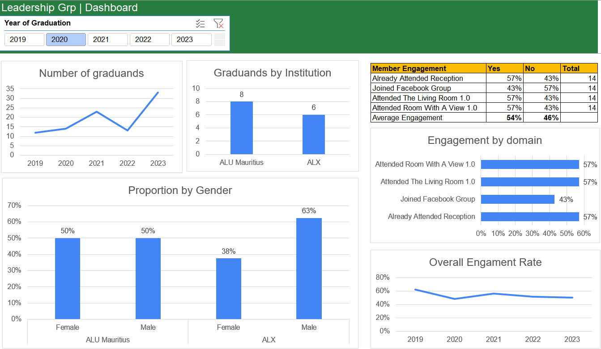

Project Details
CGA&D
An animated data story built with Flourish to present the findings of a Community graduands analysis and dashboard report.
This project focused on creating an interactive data dashboard and animated story for community analysis. Tools used include Flourish, Tableau, and Excel.
Back to PortfolioOperation Fistula

Visualising estimates of obstetric fistula prevalence based on an academic research paper. The project provided essential insights into maternal health issues worldwide.
Back to PortfolioEqual Measures 2030

A project for Equal Measures 2030 for the International Day of the Girl 2019. It focused on gender equality data and showcased the progress and challenges of achieving gender equality globally.
Back to Portfolio